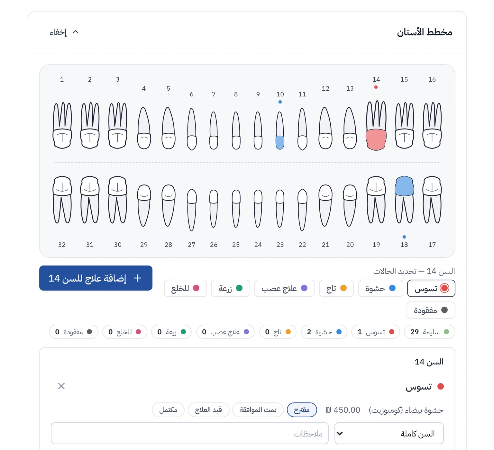
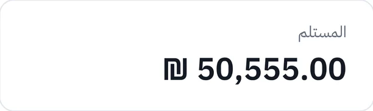
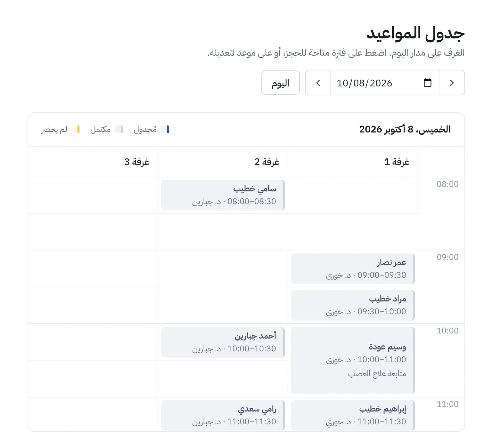
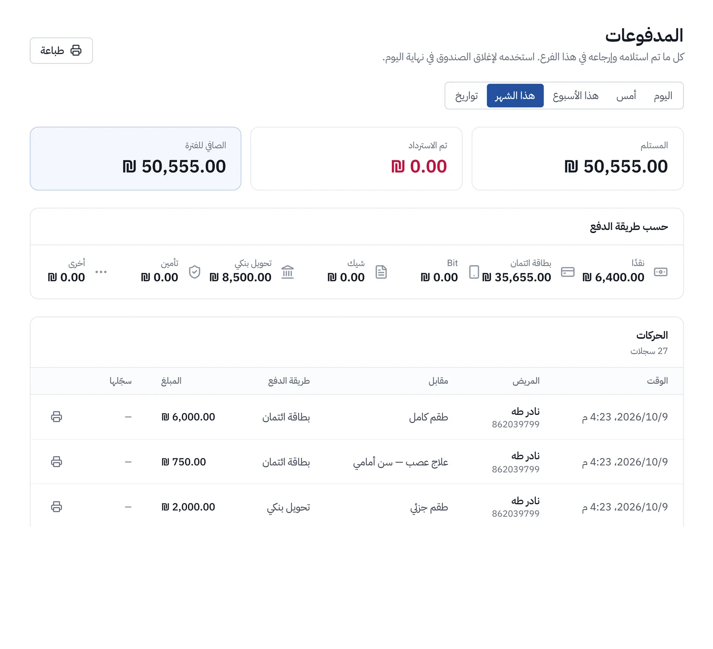
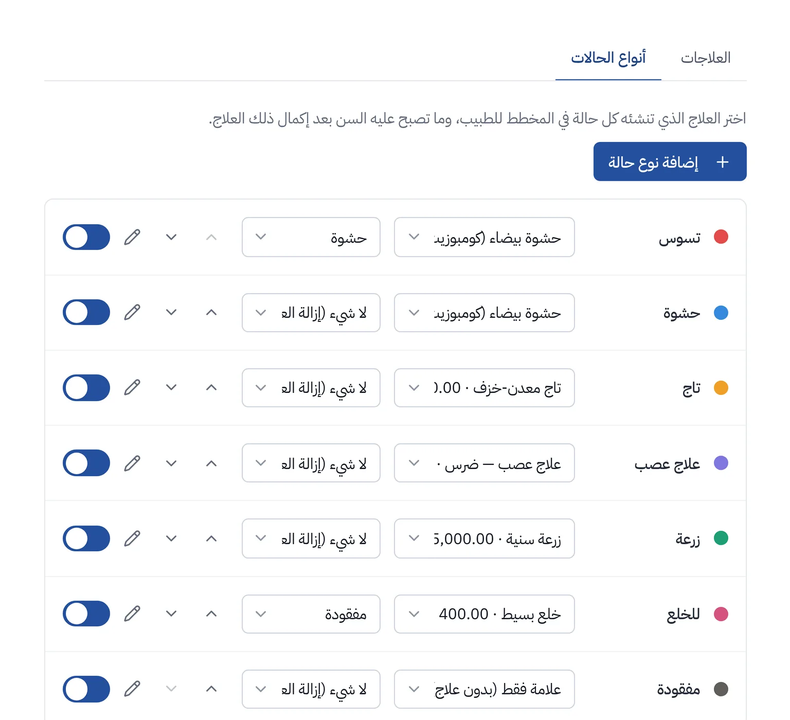

كل ما تحتاجه العيادة، مبني حول مخطط الأسنان.
ClinicLine نظام لإدارة عيادات الأسنان: المواعيد وملفات المرضى وخطط العلاج والمدفوعات في مكان واحد، بالعربية والعبرية والإنجليزية.


ثلاث لغات
العربية والعبرية والإنجليزية، من اليمين إلى اليسار حيث يلزم.
نظام خاص لكل عيادة
قاعدة بيانات خاصة بها، لا يشاركها أحد.
نسخ احتياطي كل ليلة
نسخ تُحفظ بعيدًا عن الخادم.
يعمل في المتصفح
لا حاجة لتثبيت أي شيء على حواسيب العيادة.
ما الذي يقدّمه النظام
كل ما يحتاجه الاستقبال والطاقم الطبي والإدارة خلال يوم العمل.
المواعيد
عرض يومي لكل غرفة مع الطاقم الطبي لكل موعد. يُكتشف الحجز المزدوج قبل حفظه.
ملفات المرضى
بيانات الاتصال والتاريخ المرضي والحساسية والمواعيد والملاحظات. يمكن الوصول إلى أي ملف برقم الهوية أو بالاسم.
مخطط الأسنان
تُسجَّل الحالة على السن فيُضاف العلاج إلى الخطة تلقائيًا، وعند إكماله يتحدّث المخطط.
خطط العلاج
تؤخذ الإجراءات من قائمة أسعار العيادة وتنتقل من «مقترح» إلى «مكتمل».
المدفوعات والرصيد
يمكن استلام الدفعات نقدًا أو بالبطاقة أو بالحوالة البنكية أو بالشيك أو عبر Bit، وتتبّع رصيد كل مريض ومعرفة المبالغ المستحقة.
الصور والأشعة
تُحفظ صور الأشعة والصور في ملف كل مريض، ولا يراها إلا الطاقم الطبي والإدارة.
عدة فروع
حساب واحد لكل الفروع. قائمة المرضى مشتركة، ويُسنَد الطاقم إلى الفروع التي يعمل فيها.
ثلاث لغات
العربية والعبرية والإنجليزية. تُعرض العربية والعبرية من اليمين إلى اليسار.
جولة في النظام
شاشات حقيقية من ClinicLine، ببيانات تجريبية وهمية.



لكل وظيفة ما تحتاجه فقط
الأطباء والطبيبات
المواعيد الشخصية ومخططات المرضى وخطط العلاج والصور.
الاستقبال
مواعيد اليوم كلها، وتسجيل الوصول والمدفوعات. دون الاطلاع على الصور.
الإدارة
الطاقم والفروع وقائمة الأسعار وإعدادات المخطط والصلاحيات.
بيانات المرضى تبقى لديكم
ملف المريض معلومات خاصة. هكذا يحميها ClinicLine.
نظام منفصل لكل عيادة
تعمل كل عيادة بقاعدة بيانات خاصة بها، لا تشاركها مع أي عيادة أخرى.
اتصال مشفّر
تمر كل الاتصالات عبر HTTPS.
نسخ احتياطي كل ليلة
تُحفظ النسخ بعيدًا عن الخادم، وقد جرّبنا الاستعادة منها.
تسجيل الوصول
يمكن معرفة من فتح ملف مريض أو عدّله، ومتى.
دخول آمن
تُغيَّر كلمة المرور الجديدة عند أول دخول، وتُقفل الحسابات بعد محاولات خاطئة متكررة، والتحقق بخطوتين متاح.
بياناتكم تخرج معكم
يمكنكم طلب نسخة كاملة في أي وقت: ملفات المرضى والجداول والصور.
البدء
حدّثونا عن عيادتكم
كم فرعًا لديكم، وكم عدد الطاقم، وبأي لغات يعمل.
نجهّز النظام
قائمة الأسعار وحسابات الطاقم واسم العيادة، في نظام مستقل خاص بكم.
يبدأ الطاقم العمل
تُغيَّر كلمة المرور المؤقتة عند أول دخول، ثم يمكن البدء مباشرة.
شاهدوا أولًا، ثم قرّروا
اطلبوا عرضًا تجريبيًا وسنرسل لكم رابطًا خاصًا إلى عيادة تجريبية مليئة بمرضى وهميين، تتصفحونها بالوتيرة التي تناسبكم.
أسئلة شائعة
هل يلزم تثبيت أي برنامج؟
لا. يعمل النظام في المتصفح على أي حاسوب أو جهاز لوحي أو هاتف.
أين تُحفظ البيانات؟
في قاعدة بيانات العيادة الخاصة، على خادم ندير شؤونه. نتفق معكم على منطقة الاستضافة.
هل يمكن أخذ البيانات عند المغادرة؟
نعم. نصدّر ملفات المرضى والجداول والصور في أي وقت تطلبون ذلك.
هل يمكن استخدامه في عدة فروع؟
نعم. تتشارك الفروع قائمة مرضى واحدة، ويُسنَد الطاقم إلى الفروع التي يعمل فيها.
ما اللغات المدعومة؟
العربية والعبرية والإنجليزية. يمكن تحديد لغة واحدة للعيادة كلها، أو ترك الاختيار للطاقم.
كم التكلفة؟
تعتمد على عدد الفروع وحجم الطاقم. أرسلوا لنا رسالة وسنعدّ لكم عرض سعر.
حدّثونا عن عيادتكم
اكتبوا بضعة أسطر وسنتواصل معكم، عادةً خلال يوم عمل.